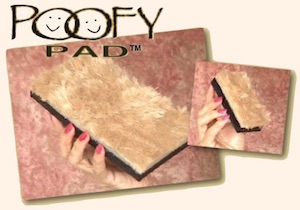
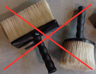
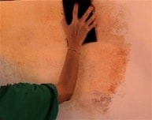
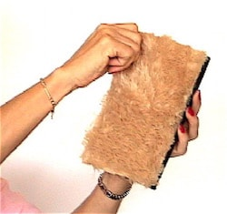
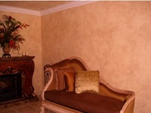
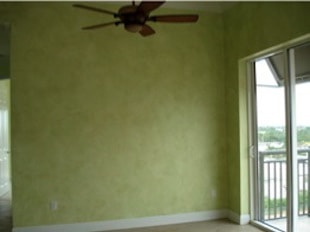
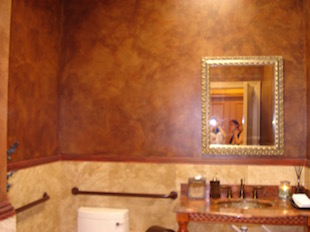
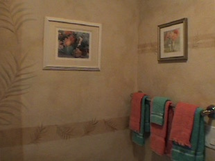

There are many tools used to faux paint different techniques on the market that can be used with the Triple S Faux Painting System but this one is a must!

A set of small and large Poofy Pads are included with our Basic Faux Painting kit and ALL of our Combo kits, also.
Now you can learn to faux paint in nearly half the time it takes with other methods, eliminating the extra steps to soften the glazes with brushes. No need to buy any expensive brushes. With the Triple S Faux Painting System, faux painting just got easier!


Many methods teaching popular soft looking faux finishes like the Old World Parchment or Color Washing require the use of expensive large brushes to soften the glaze after blending them.badger brushes You can save money because softening the glazes is done with the Poofy Pad. Save time, too, since blending glazes with the Poofy Pad is now a breeze.
Other methods require using tools that can tire your hands. However, that's not a problem with this faux painting tool. It fits perfectly in your hand and is so lightweight so that your hands don’t hurt even after hours of pouncing with it.

After applying gazes or paint on the wall with the Multi Color Faux Palette (also included in our BASIC and Combo Kits), use the Poofy Pad to blend the colors together.
Our Faux Painting Workshop on DVD will show you exactly how.

If you take proper care of this faux painting tool, you can get up 8 uses from each Poofy Pad.
Before using the Poofy Pad for the first time, pull at the edges to remove any loose fibers. Fluff out after washing with a jet stream nozzle on your garden hose. There is no need to use soap. This one here has been used 6 times.
The pictures below are just a few samples of what you can faux paint with this innovative tool.
Soft Faux Finishes like the ones faux painted on these walls has never been easier.





(This kit includes Basic, Faux Marble, Faux Wood Kit and tools for texturing)
*FREE Priority Shipping and Color Idea E-book